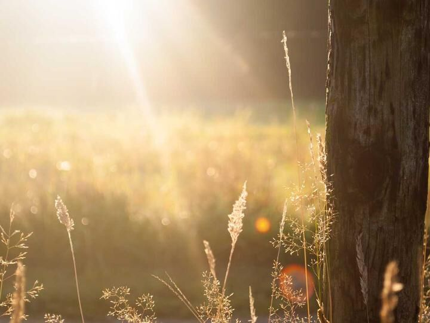

01
статус: действует каждую зиму
Подкормочные площадки
Когда джуд сковывает траву льдом, сайгак не может до неё добраться. Площадки с сеном и водой, разложенные по традиционным зимовкам, становятся для стада запасным выходом.
Егеря обновляют площадки всю зиму, ориентируясь на погоду и данные учётов. В жестокие зимы у кормушек собираются тысячи животных — именно поэтому за площадками следят особенно внимательно: скопление требует ветеринарного контроля.
против угрозы: суровые зимы · охват: все зимовки · режим: декабрь — март